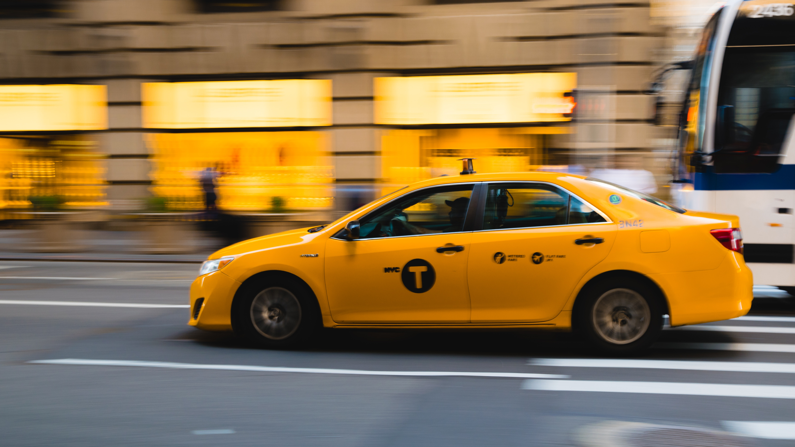

Transportation
Plane
Taniti is served by a small airport that can accommodate small jets and propeller planes. Taniti is in the process of expanding the airport so larger jets will be able to land on the island within the next few years.
Cruise Ship
Some visitors arrive on a cruise ship that docks in Yellow Leaf Bay for one night per week.

Ground Transportation
Bus
Public buses serve Taniti City and run from 5 a.m. to 11 p.m. every day. Private buses serve the rest of the island.

Taxi
Taxis are available in Taniti City.
Rental Car
rental cars can be rented from a local rental agency near the airport.
Biking
Bikes and helmets are available to rent from several vendors (helmets are required by law).

Walking
Taniti City is fairly flat and very walkable. Many tourists stay in the area surrounding Merriton Landing: this area is easy to explore on foot.